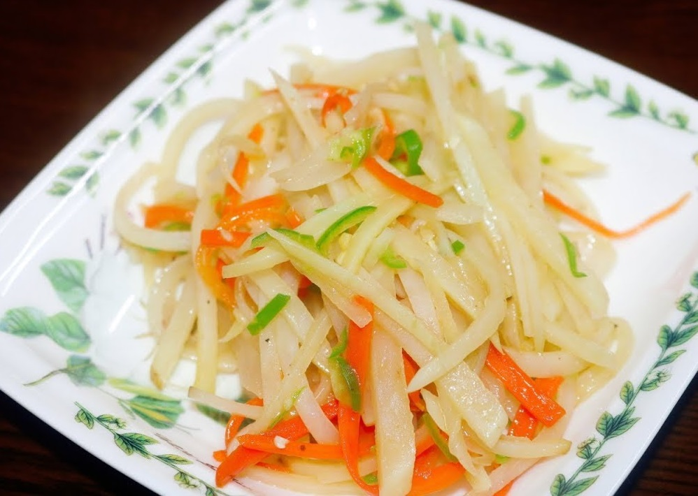
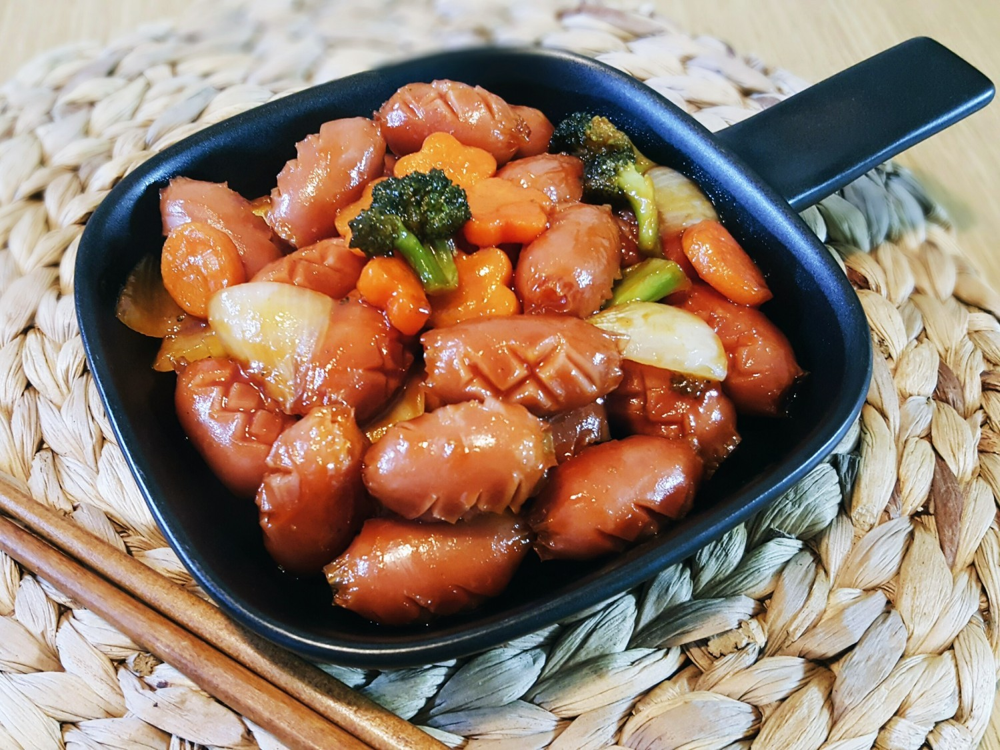

반찬
* 감자볶음
부드러우면서 담백한 맛이 나는 감자볶음!
주재료인 감자는 탄수화물이 충부하여 쉽게 포만감을 일으켜 식사 대용으로 좋고 다양한 방법으로 조리가 가능합니다!
재료 : 감자, 당근, 소금
<과정>
1. 감자와 당근을 채 썰어 줍니다.
2. 채썬 감자를 그릇에 담군 후 찬물로 가볍게 행궈 전분기를 빼줍니다.
3. 가스레인지에 팬을 올리고 식용을 넉넉히 둘러준 후 물기 뺀 감자와 당근을 중약불에서 볶아줍니다.
4. 소금으로 감자볶음의 간을 해줍니다.
5. 감자와 당근이 익으면 감자볶음 완성!
간단하고 맛있는 감자볶음 같이 만들어봐요~
* 계란말이
한국인의 국민 반찬 계란말이!
주재료인 계란 이외에는 필요한 재료가 거의 없으며 조리 시간도 오래 걸리지 않는 간단한 요리! 같이 만들어볼까요?
재료 : 계란, 당근, 대파, 스위트콘
<과정>
1. 당근과 대파를 작게 다져줍니다.
2. 그릇에 계란을 깨고 잘 풀어줍니다.
3. 계란을 푼 그릇에 다진 당근과 대파, 스위트콘을 넣고 소금으로 간을 해줍니다.
4. 가스레인지에 팬을 올린 다음 식용유를 조금 넣고 계란물을 약불에서 느긋하게 익혀줍니다.
5. 밑면이 익는 듯 싶으면 조금씩 말아줍니다.
(밑면이 완전히 익으면 말기 힘듭니다.)
6. 팬에 식용유를 더 추가해주고 계란물도 조금씩 추가해줍니다. 계란물이 없어질 때까지 반복합니다.
7. 계란말이를 완성한 후에 조금 식힌 후 썰어줍니다.
보기도 좋고 맛도 좋고 영양도 풍부한 계란말이 완성!
* 소세지 야채볶음
달짝지근한 쏘야!
남녀 노소 가리지 않고 인기만점, 소세지 야채볶음 같이 요리해봅시다!
재료 : 소세지, 파프리카, 양파, 케첩2스푼, 굴소스 1스푼, 고추장 1스푼, 다진마늘 반스푼, 설탕 반스푼
<과정>
1. 먼저 소세지에 칼집을 내줍니다.
2. 양파를 먹기 좋은 크기로 썰어줍니다.
3. 파프리카의 심을 제거한 후 먹기 좋은 크기로 썰어줍니다.
4. 가스레인지에 팬을 올리고 식용유를 살짝 둘러준 후 칼집 낸 소세지를 볶습니다.
5. 그 다음 채소를 넣고 아삭할 정도로 볶아줍니다.
6. 채소가 어느정도 볶아지면 만들어진 소스를 중약불에서 2분 볶습니다.
맛있는 소세지 야채볶음 완성!